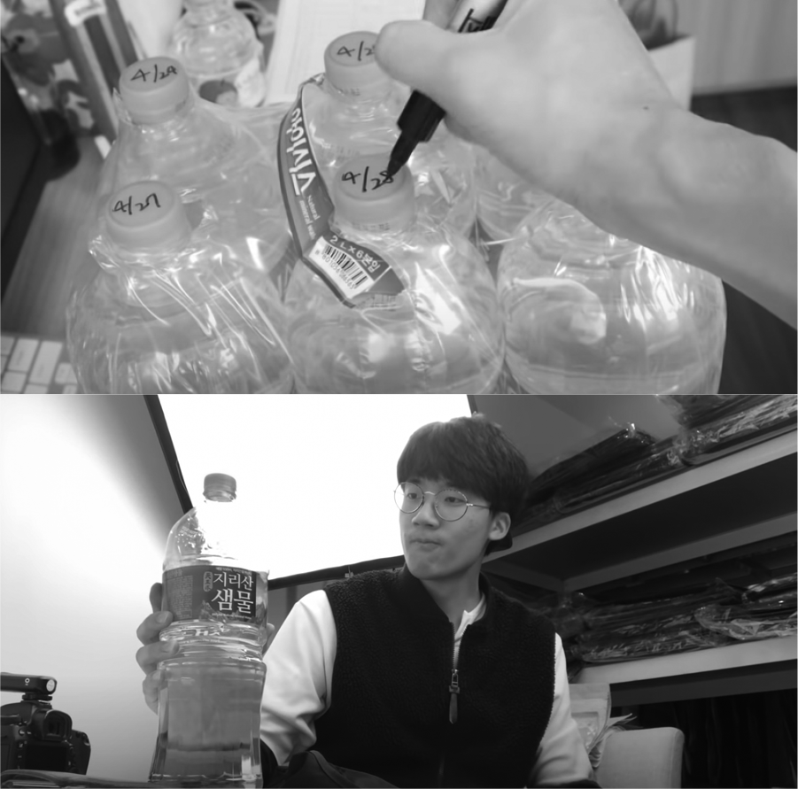

화사한 피부의 비결이 궁금하다!
트러블 하나 없이 깨끗하고 화사하게 빛나는 피부는 상대방에게 좋은 인상을 남기는 데 무엇보다 중요한 요소다. 괜히 소문난 피부과에 사람들이 줄을 서고, 좋다는 화장품을 사기 위해 해외에서까지 원정을 오는 게 아니다. 외모에 지나치게 집착하는 일이 부정적으로 평가받는 시대지만 적어도 피부만큼은 예외다.
나 역시 어려서부터 지금까지 항상 피부 트러블을 한두 개씩 달고 살아 거울을 볼 때마다 신경이 쓰이곤 했다. 중고등학생 때는 얼굴이 여드름으로 가득 차 있었지만, 꾸밀 줄도 모르고 그럴 필요도 없었기 때문에 크게 개의치 않고 살았다. 아무래도 성장기이고 호르몬 작용도 활발하다 보니 어쩔 수 없다고 생각했다. 그런데 어른이 되면 괜찮아질 줄 알았던 피부는 안타깝게도 시간이 지나도 크게 나아지지 않았다. 학생 때보다는 덜했지만, 더 깨끗하고 뽀얀 피부를 갖고 싶다는 욕심은 버릴 수가 없었다.
그러다 우연히 아기처럼 하얗고 맑은 피부를 가진 남성 유튜버를 보게 되었다. 너무 부러웠고 비결이 있다면 당장이라도 따라 하고 싶었다. 다른 사람들도 마찬가지였는지 피부 관리 비법을 묻는 댓글이 많이 달렸고, 어느 날 그 질문에 대한 답변이 영상으로 올라왔다.
그 유튜버의 대답은 의외였다. 본인이 하루에 물을 4리터씩 마시는 ‘물 먹는 하마’라는 것이었다. 4리터……? 대체 어떻게 하루 종일 물을 4리터나 마신단 말인가……. 아무리 취미로 운동을 하고 있어서 물을 많이 마신다고 해도 너무 어마어마한 양이지 않은가.
생각해보니 나는 하루에 물을 채 500밀리리터도 마시지 않았다. 물보다는 커피를 더 많이 마셨고 물은 정말 갈증이 날 때만 한 모금씩 마시는 정도였다. 어쩌면 내 피부의 문제는 물 부족 때문일 수도 있겠다는 생각이 들어 곧바로 매일 물 2리터 마시기에 돌입했다.
✔ 목표: 3주 동안 하루에 물을 2리터씩 마신다.

사막여우에서 물 먹는 하마로의 변신
일단 2리터짜리 생수 한 묶음을 사놓고 뚜껑에 날짜를 적어 매일 한 병씩은 비우겠다고 다짐했다. 그리고 컵에 300밀리리터 정도를 따라 원샷을 했는데 이게 웬걸, 어우, 느끼해. 갈증은 평소처럼 한 모금만으로 금세 해소되었고 이후에 들이켜는 물은 비릿하기만 했다. 물을 마시면서 이런 느낌은 처음이었다. 300밀리리터를 하루에 일곱 번만 먹으면 된다고 생각했는데 예상보다 쉽지 않은 도전이 될 것 같았다.
그래서 차라리 계속 물을 옆에 두고 야금야금 마시는 게 나을 것 같아 컵과 물을 항상 책상 위에 뒀다. 두 잔쯤 마셨을까, 바로 신호가 왔다. 너무 소변이 마려워서 바로 화장실로 뛰어갔다. 그리고 불길한 예감이 들었다.
‘이거 왠지 하루 종일 화장실만 들락날락하겠는데?’
왜 슬픈 예감은 틀린 적이 없나. 나는 장염에 걸린 사람마냥 수시로 화장실을 찾았다. 다시 자리에 앉아 물 한 컵을 마시면 또 신호가 오고, 화장실에 다녀와서 조금 있다 물을 마시면 또 금세 신호가 온다. 내 몸에 무슨 문제가 생긴 줄 알았다. 평소에 물을 안 마시던 놈이 갑자기 들이부으니 장기들도 놀란 게 분명하다. 어쨌든 첫날에는 화장실을 일곱 번쯤 갔다. 조금 귀찮았지만 그다지 기분이 나쁘진 않았다. 오히려 노폐물이 빠져나가는 듯했고 저녁이 되었을 때 평소 같으면 푸석푸석했을 피부에 생기가 도는 기분마저 들었다.
물 마시기를 시작하니 자연스럽게 커피가 줄었다. 물만 해도 2리터를 마셔야 했기 때문에 다른 액체를 내 몸에 들일 여유가 없었다. 조금만 신경을 안 쓰고 물을 덜 마신 날에는 자기 직전에 500밀리리터를 원샷해야 하는 불상사가 일어난다. 그래서 공부할 때도, 일을 할 때도, 영상 편집을 할 때도 항상 옆자리에 물과 컵을 놔두고 컵이 비는 대로 채워가며 계속해서 물을 마셨다. 여전히 화장실은 자주 갔지만 이상하게 기분이 좋았다.
3~4일 정도 지나자 물을 4리터씩 마시는 그 유튜버를 조금 이해할 수 있었다. 특히 운동을 하고 나면 땀을 흘린 만큼 물을 보충해주기 위해 순식간에 1리터쯤을 마셨다. 그런 날에는 2리터를 다 마시고도 모자라 더 마셨고, 도전은 점점 수월해져 가뿐하게 매일의 목표를 달성할 수 있었다.
일주일쯤부터는 몸이 조금 익숙해진 걸까. 하루 종일 물을 마셔도 처음에 비해 화장실에 가는 횟수가 줄어들었다. 이제는 컵이 옆에 없으면 불안했다. 겨울에 도전을 시작한 터라 사무실에는 항상 히터가 켜져 있어 건조했는데, 가습기를 트는 것보다 물 한 잔을 마시는 게 피부에도 더 좋았다.
식습관에도 작은 변화가 생겼다. 보통 아침을 먹지 않고 출근해서 10시 정도만 되면 상당히 배가 고파서 편의점으로 달려가 삼각김밥 같은 주전부리를 사 먹었다. 그런데 아침부터 계속해서 물을 마시니 배가 고파도 차라리 물을 좀 더 마시고 나중에 점심을 맛있게 먹자는 생각이 들어 ‘모닝 편의점 라이프’에서 해방될 수 있었다.

삶의 질이 달라지는 인생 습관을 얻다
물 마시기는 내가 했던 도전들 중 가장 쉽게 루틴으로 정착했다. 게다가 결과도 놀라웠다. 혹시 몰라 도전 시작 전에 촬영해둔 피부 상태와 3주 후의 피부 상태를 비교해보니 정말 ‘꿀피부가 되어 있었다!’……까지는 아니었지만, 전체적으로 트러블이 많이 가라앉았고 톤도 화사해졌다. 노폐물이 빠져나간 것, 커피를 적게 마시게 된 것, 모닝 편의점 라이프를 그만두게 된 것이 복합적으로 작용했는지 이전보다 훨씬 피부가 깨끗해졌다. 전보다 피로도 훨씬 덜 느꼈고, 대장 활동도 활발해졌다. 물론 화장실을 하루 종일 왔다 갔다 해야 한다는 불편함이 있었지만 그 정도는 감수할 수 있었다.

물 마시기는 내가 했던 도전들 중 가장 쉽게 루틴으로 정착했다.
그렇다면 물은 피부에만 좋은 걸까? 3주 동안 물 마시기에 도전하다 보니 새로운 궁금증이 생겼다. 사람 몸의 70퍼센트가 물로 이루어져 있다는 것은 잘 알려진 사실이다. 더 구체적으로 살펴보면 물은 혈액의 94퍼센트, 뇌와 근육의 75퍼센트를 차지한다. 물은 우리 몸의 노폐물을 배출하고 산소와 영양소를 운반하는 데 중요한 역할을 한다. 물이 조금만 부족해져도 온몸의 신진대사가 느려지고 독소를 제대로 배출하지 못하게 된다. 따라서 체내 수분량이 줄어들면 피로를 느끼거나 집중력이 떨어지기 마련이다. 도전이라는 우연한 계기였지만, 전반적인 삶의 질을 높이기 위해서라도 물 마시기는 선택이 아니라 필수라는 사실을 새삼 깨달았다.
이번 도전은 내가 가장 오랫동안 실천하는 습관이 되었다. 누군가 지금까지 이어오고 있는 도전이 무엇이냐고 물으면 자신 있게 ‘물 2리터 마시기’라고 이야기한다. 꾸준히 지속해오다 보니 확실히 물을 많이 마셨을 때와 그렇지 않을 때의 컨디션이 다르다는 것이 느껴진다. 특히 우리는 일상적으로 커피와 술을 달고 살지 않는가. 둘 다 우리 몸의 수분을 빼앗아가는 녀석들이기 때문에 그보다는 물을 더 가까이 두고 지내는 게 건강에도 좋다.
유튜브를 하면서 건강한 인생 습관 하나를 얻어서 기쁘다.
앗, 갑자기 이런 광고 카피 하나가 떠오른다.
‘마신 날과 많이 마신 날의 차이. 경험해보세요.’